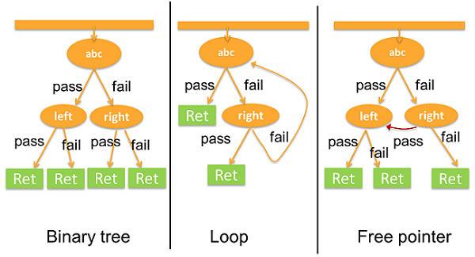
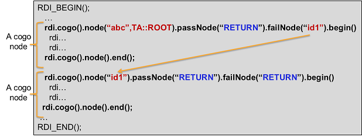

Structures of multiple cogo() nodes
The cogo() class supports multiple structures for pattern‑based
judgment and jump. You can use the cogo() class to create many types of
structures for your applications.
Some common types of cogo()-based structures.

Functions for cogo() structures
The cogo() class has the following functions for creating structures:
- node()
- passNode()
- failNode()
Sample structure
The following diagram shows how a cogo structure works.

Example
RDI_BEGIN();
rdi.cogo().node("a",TA::ROOT).passNode("b").failNode("c").begin();
rdi.func().label("abc").execute(); // Pass/fail judgment.
rdi.cogo().wait(30 us); // System-reserved waiting time.
rdi.cogo().node().end();
rdi.cogo().node("b").passNode("RETURN").failNode("RETURN").begin();
rdi.dc().pin("VDD").iMeas().limit(0,1 mA).execute(); // Pass/fail judgment.
rdi.cogo().wait(20 us); // System-reserved waiting time.
rdi.cogo().node().end();
rdi.cogo().node("c").passNode("RETURN").failNode("RETURN").begin();
rdi.smartVec().pin("D1").expectData(0x55,8).execute(); // Pass/fail judgment.
rdi.cogo().wait(30 us); // System-reserved waiting time.
rdi.cogo().node().end();
RDI_END();Each structure needs at least one ROOT node.
Functional changes
- Introduced in SmartRDI 2.4.0